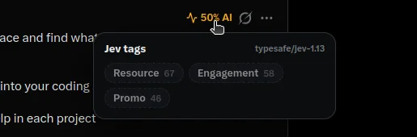

このUIがしていること
判断は、投稿を隠すのではなく、投稿に小さな印を足す形で現れる。読むかどうかは、利用者が決める。
- バッジは、Xの既存の操作の並びに収まる大きさで置かれている。タイムラインの読み方を変えずに、情報を足している。
- 詳しい内容は、カーソルを合わせたときだけ開く。常に見えるのは割合だけで、タグは求めたときに読む。
- パネルにモデルの名前が出る。この数値が何によるものかを、その場で示している。
- 「50% AI」のような値は、もっともらしい事実のように読まれやすい。作者は、値は判断であって判定ではない、と断っているが、その断りがバッジの上でどう伝わるかは、画像からは分からない。他人の投稿に、書き手の確認なしに印を付ける道具である点に、注意が要る。
- 値が違うと思ったときに、利用者が指摘したり、印を消したりする手段は、確かめていない。
キャプチャ
{kind=link}

（原寸の画像を開く）見る箇所投稿の右上の「50% AI」のバッジ、その下に開いた「Jev tags」のパネル、右上のモデルの表記「typesafe/jev-1.13」、タグと数値（Resource 67、Engagement 58、Promo 46）
入力から画面の変化まで
-
判断への入力
Xのタイムラインに出ている投稿の文章。画像など、文章以外を渡しているかどうかは分からない。
-
Jevの判断
投稿ごとの「AIが書いた割合」と、投稿の種類を表すタグごとの数値。パネルには「typesafe/jev-1.13」と出ている。数値の意味（確率か、点数か）は、画面に説明がない。
-
結果がUIをどう変えるか
投稿の右上、メニューの横に、割合のバッジが出る。バッジにカーソルを合わせると、「Jev tags」のパネルが開き、タグと数値が並ぶ。投稿のほかの画像では、割合によってバッジの色が変わる（低い値は緑、50%前後は橙）。調査の記録では、設定の画面と、広告や有償の提携の投稿を隠す機能がある。
- 判断型の見立て
- 不明出典から判断できない
- 割合とタグの数値が、確率なのか段階の評価なのかは、画面から分からない。
Jevとの適合
流れてくる投稿の1つ1つに、決まった観点の値を素早く付ける使い方は、Jevの速さと費用に合う。ただし、「AIが書いたか」は、文章だけから確かめることが難しい問いである。速く答えられることと、答えが当たっていることは、別である。
確認範囲と未確認事項
調査監査の評価はC（索引向け）。実装とリポジトリは実在するが、Xの投稿に判断のラベルを重ねる型は、既存のSift、Xtags、jevxの事例と重なる。この事例は、その比較対象として置く。根拠は作者の投稿の画像で、掲載したのはそのうち、他人の投稿や写真を含まない1枚だけである。割合やタグの数値が何を意味するか、どれくらい当たるかは示されていない。作者自身が、値は判断であって判定ではない、と断っている。
- 確認済み投稿の画像のうち、掲載した1枚に見える内容（「50% AI」のバッジ、「Jev tags」のパネル、モデルの表記、3つのタグと数値）。投稿のほかの画像に、投稿ごとのバッジが並ぶこと
- 未検証数値の意味と計算、割合とタグの精度、設定の画面、広告を隠す機能の動作、値を指摘する・印を消す手段、リポジトリのコード（監査は実在を確認したと記録しているが、このサイトの作業では開いていない）
- 推定扱い質問型は不明として扱う。割合とタグの数値が、確率なのか、段階の評価なのかは、画面から分からない
- 引用投稿の画像のうち1枚を引用（他人の投稿、アカウントの画像、人物の写真を含む画像は使っていない）。権利は作者に帰属する